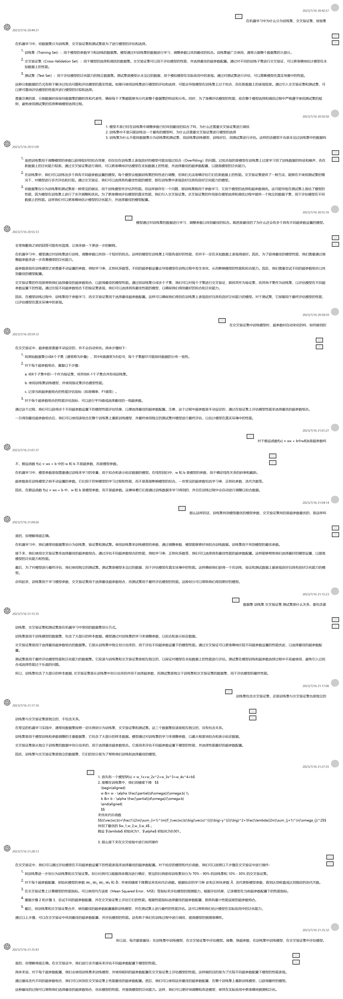

结论：
- 首先有一个模型\(f(x) = w_1x+w_2x^2+w_3x^3+w_4x^4+b\)
-
接着在训练集中，我们用梯度下降 $$ \begin{aligned} w &= w - \alpha \frac{\partial}{d\omega}J(\omega.b) \ b &= b - \alpha \frac{\partial}{d\omega}J(\omega.b) \end{aligned} $$ 来优化代价函数 \(\(J(\vec{w},b)=\frac{1}{2m}\sum_{i=1}^{m}(f_{\vec{w},b}\big(\vec{x}^{(i)}\big)-y^{(i)}\big)^2+\frac{\lambda}{2m}\sum_{j=1}^{n}\omega_{j}^2\)\) 找到了最优的 \(w_1,w_2,w_3,w_4\) 。 假设 \(\lambda\) 初始化为1，\(\alpha\) 初始化为0.001。
-
那么接下来在交叉检验中进行如何操作 在交叉验证中，我们可以通过评估模型在不同超参数设置下的性能表现来选择最佳的超参数配置。对于给定的模型和代价函数，我们可以按照以下步骤在交叉验证中进行操作：
-
将训练集进一步划分为训练集和交叉验证集。划分比例可以根据具体情况进行确定，常见的比例是将训练集划分为 70% - 90% 的训练集和 10% - 30% 的交叉验证集。
-
对于每个超参数配置，初始化模型的参数 \(w_1, w_2, w_3, w_4\) 和 \(b\)，并使用梯度下降算法来优化代价函数。根据给定的学习率 \(\alpha\) 和正则化参数 \(\lambda\)，迭代更新模型参数，直到达到收敛或达到预定的迭代次数。
-
在交叉验证集上计算模型的性能指标。可以使用均方误差（Mean Squared Error，MSE）等指标来评估模型的预测能力。根据评估结果，记录模型在当前超参数配置下的性能指标。
-
重复步骤 2 和步骤 3，尝试不同的超参数配置，并在交叉验证集上评估它们的性能。根据性能指标选择最佳的超参数配置，即具有最小性能误差的超参数组合。
-
最后，将训练集和交叉验证集合并，使用最佳的超参数配置重新训练模型，并在测试集上进行最终的性能评估。这可以帮助我们估计模型在实际应用中的泛化能力。
通过以上步骤，可以在交叉验证中找到最佳的超参数配置，并评估模型的性能。这有助于我们在训练过程中进行调优，提高模型的预测准确性。
所以说，每次都是循环：在训练集中训练模型，在交叉验证集中评估模型。接着，换超参数，在训练集中训练模型，在交叉验证集中评估模型。
是的，你理解得很正确。在交叉验证中，我们进行多次循环来评估不同超参数配置下模型的性能。
具体来说，对于每个超参数配置，我们会使用训练集来训练模型，并使用相同的超参数配置在交叉验证集上评估模型的性能。这样做的目的是为了比较不同超参数配置下模型的性能表现。
通过循环迭代不同的超参数组合，我们可以找到在交叉验证集上性能最佳的超参数配置。然后，我们可以使用这些最佳的超参数配置，在整个训练集上重新训练模型，以获得最终的模型。
这种循环的过程可以帮助我们选择最佳的超参数组合，优化模型的性能，并提高模型的泛化能力。这样，我们可以更好地调整和改进模型，使其在实际应用中更准确地预测和泛化。
总对话：
